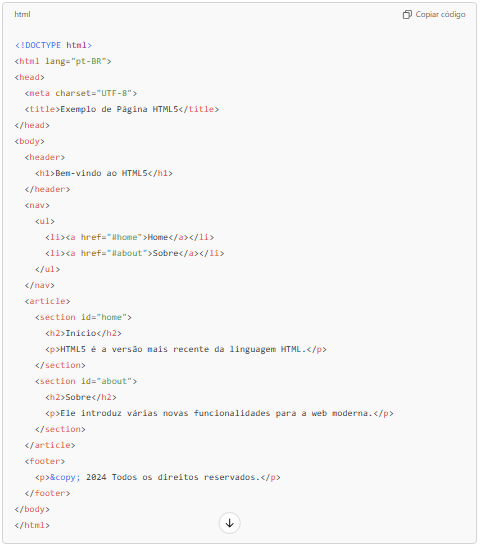

O que é HTML5? 
O HTML5 (Hypertext Markup Language 5) é a versão mais recente da linguagem HTML usada para estruturar e exibir conteúdo na web. Ele traz melhorias significativas em relação às versões anteriores, oferecendo novos elementos, atributos e APIs para criar páginas web mais interativas, acessíveis e ricas. O HTML5 é um marco importante na evolução da web, pois permite desenvolver sites mais rápidos, ricos em multimídia e com melhor acessibilidade, além de oferecer mais controle ao desenvolvedor para personalizar a experiência do usuário. Aqui estão os principais pontos sobre HTML5:
Novos Elementos Semânticos- Estrutura mais clara e semântica: HTML5 introduz tags como header, footer, article, section, aside, nav e entre outras, que indicam claramente a função de cada parte da página. Isso facilita a organização do conteúdo e melhora a acessibilidade e a SEO (otimização para mecanismos de busca).
- Melhoria na acessibilidade: Elementos semânticos ajudam leitores de tela e outros dispositivos assistivos a entender melhor a estrutura da página, melhorando a experiência para usuários com deficiência.
- Tags de Áudio e Vídeo: O HTML5 introduziu as tags audio e video, permitindo incorporar multimídia diretamente na página sem precisar de plugins externos, como o Flash. É possível controlar a reprodução, ajustar volume e até adicionar legendas diretamente pelo HTML.
- Novos tipos de entrada (input types): HTML5 trouxe novos tipos de campo de entrada, como email, date, number, range, tel, entre outros, que facilitam a criação de formulários e melhoram a experiência do usuário em dispositivos móveis.
- Validação de formulários integrada: Agora, é possível configurar validações básicas diretamente no HTML, como definir um campo como obrigatório (required), especificar um padrão (pattern) e outros atributos de validação.
- Canvas: O comando canvas permite desenhar gráficos, animações e outras imagens dinâmicas usando JavaScript. É usado para criar conteúdo visual interativo, como jogos ou gráficos animados.
- SVG (Scalable Vector Graphics): Suporte embutido para SVG no HTML5 permite a criação e manipulação de gráficos vetoriais escaláveis, que são úteis para logos, ícones e gráficos interativos.
- Geolocation API: Permite que sites obtenham a localização do usuário, com permissão do mesmo, para oferecer conteúdo personalizado, como mapas e serviços locais.
- Web Storage (Local Storage e Session Storage): Alternativa ao uso de cookies, o Web Storage permite armazenar dados de sessão ou persistentes no navegador do usuário, com maior segurança e capacidade de armazenamento.
- Offline e Cache: HTML5 oferece suporte para aplicações que podem funcionar offline usando o Application Cache, essencial para Progressive Web Apps (PWAs).
- Web Workers: Permite rodar scripts em segundo plano sem bloquear a interface do usuário, melhorando a performance de aplicações web.
- API de Arrastar e Soltar (Drag and Drop): HTML5 facilita a implementação de funcionalidades de arrastar e soltar (drag-and-drop) de elementos no navegador.
- Design Responsivo: HTML5 facilita a criação de sites responsivos, que se adaptam a diferentes tamanhos de tela e dispositivos. Ele funciona bem com CSS3 e media queries para criar layouts fluidos e flexíveis.
- Compatibilidade Cross-Browser: Embora nem todos os navegadores tenham suporte completo para todos os recursos HTML5 (especialmente em versões antigas), a maioria dos navegadores modernos é totalmente compatível.
- Carregamento mais Rápido: Com menos dependências de plugins e uma estrutura mais limpa, HTML5 ajuda a reduzir o tempo de carregamento da página.
- Segurança: Muitas APIs do HTML5, como a Web Storage, incluem medidas de segurança mais rigorosas em comparação com cookies, o que aumenta a privacidade e proteção dos dados do usuário.
- Compatibilidade com versões anteriores: HTML5 foi projetado para ser retrocompatível, então elementos antigos ainda funcionam. No entanto, é recomendável usar o HTML5 em conjunto com mecanismos de “fallback” para assegurar que usuários com navegadores mais antigos tenham uma experiência satisfatória.
Aqui estão alguns exemplos de novos elementos introduzidos com o HTML5:
